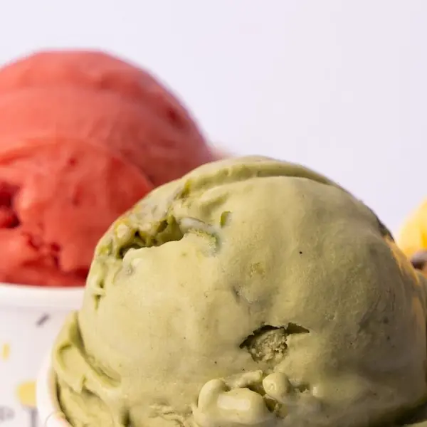
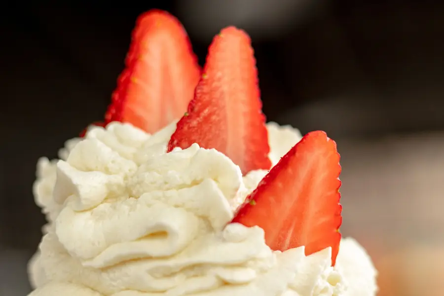
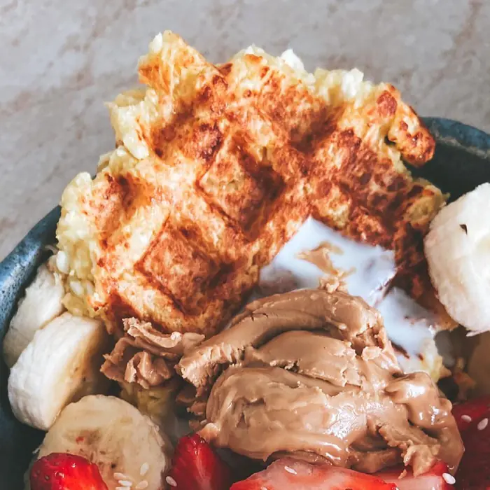

Çarşı
Hacıhalil Çarşı · Gebze
her gün 12:30 – 21:30
Yol tarifi↗



Bugünün kaprisi vitrinde. Vitrin de @cupistantr'de.

Kova Waffle Menü
250₺
Kovanın dibine kadar waffle, sos, meyve, dondurma. Siyah & Beyaz'ı da var; kasada sor, kapış kapış gidiyor.


Hacıhalil Çarşı · Gebze
her gün 12:30 – 21:30
Yol tarifi↗İlyas Uzuner Cd. No:15/A · Gebze
10:00 – 01:00 · cuma, cumartesi 02:00
Yol tarifi↗
Kap bi
mutluluk.
kabın içinde ne var
Çarşı Hacıhalil · 12:30–21:30
Osman Yılmaz İlyas Uzuner Cd. 15/A · 10:00–01:00 · Cu–Ct 02:00